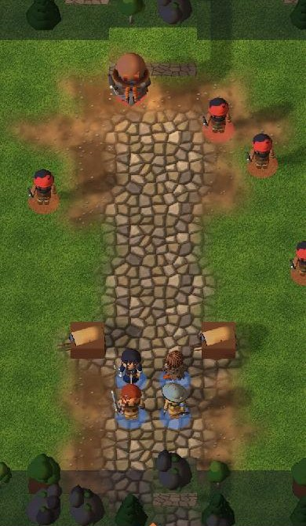
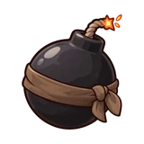
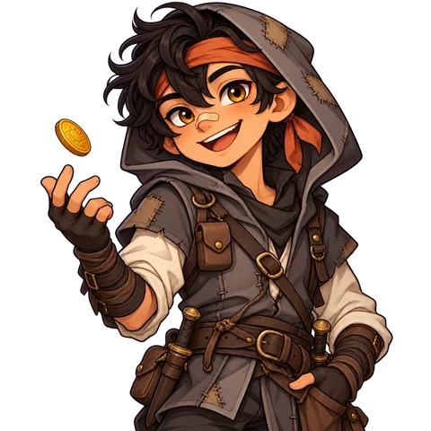
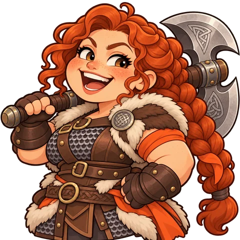

Was nach einer Mission kommt und wie die Staffel endet
Vier Momente, die die Säule „Jeder zählt“ tragen: das Ergebnis mit Beute und Kopfgeld, der Abschied von einem Gefallenen direkt danach, der Aufstieg mit einem Glutfunken und das Epilog-Mosaik am Ende der Staffel. Die Beute zeigt die gemalten Item-Bilder mit Seltenheitsrahmen.



Kopfgeld +400 +1


Glut-Pille „Sieg“, darunter Beute, Kopfgeld des Leutnants, Nebenziele und EP je Figur, alles als Symbol + Zahl (Stern = EP). Gefallene stehen grau dabei; „Weiter“ führt in ihren Abschied.


Fenn
Späher · fiel in 1-4, Die Spur des Maklers„Sagt Mira … sie schuldet mir noch einen Pfeil.“

Ganz still: alles entsättigt, nur die Glutlinie bleibt. Letzte Zeile, Trauer des Support-Partners mit ihrer Wirkung. Kein Überspringen in den ersten zwei Sekunden, keine Haupttaste in Glutorange.

Brenna
Vorkämpfer · Stufe 10 · wird Stufe 1, Loadout 4 → 5Oben der Vorrat an Glutfunken, unten zwei Wege mit Wirkung und Wertgewinn. Die Haupttaste nennt den Preis. Danach folgt ein kurzer Moment mit Funkenknistern (Art Direction, Signaturklang).
Kaelbaut die Paktwacht zur Schule für Waisen aus.Brennaspricht es endlich aus. Kael lacht.FennSein Dolch hängt über dem Kamin.Mirajagt wieder in Erlbach und schickt Wild.Tobinträgt den zu großen Helm jetzt passend.Erlbach steht, das Hungerlager ist ein Dorf geworden.
Eine Kachel je Gefährte: farbig = lebt, grau = gefallen, sepia = gegangen; dazu je Region eine breite Kachel. Kopf nennt Ende und Haltung. Wischen zeigt alle.